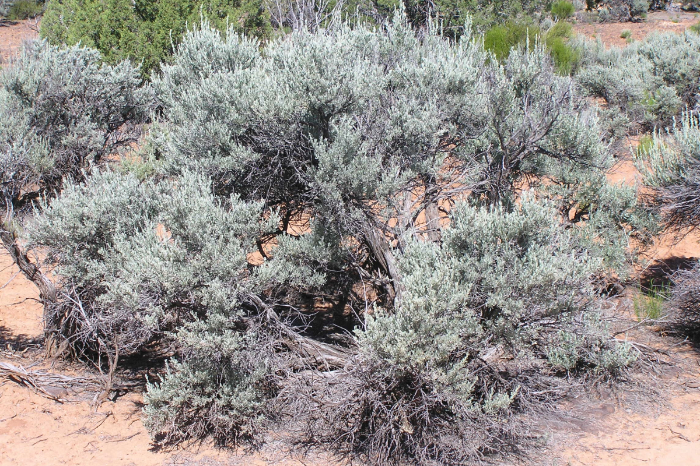

Flora

Thanks to its large size, the state of Idaho enjoys a variety of different terrains in different regions, which also bring a variety of different plant species. Some species can be found throughout the state, while others are typically only found in one or two regions.

Northern Idaho
Northern Idaho is a rugged region largely made up of forest-trees such as Douglas fir, subalpine fir, Engelmann spruce, lodgepole pine, and ponderosa pine. We can also find western red cedar, showing the close proximity of the region to the maritime climate of the Pacific Coast.

Central Idaho
Central Idaho, with its numerous streams and canyons, houses in the higher elevations forest-trees such as Grand fir, western larch, and Douglas fir. The lower elevations of the region are home to meadows surrounded by Ponderosa pine and lodgepole pine.

Southern Idaho
In the lower elevations of Idaho, we often see brush steppe ecosystems, which include a variety of shrubs, grasses, and wildflowers that are adapted to arid conditions. Some of the species found in these areas include sagebrush, bitterbrush, and rabbitbrush. Along Idaho’s rivers and streams, we often find vegetation such as willows, cottonwoods, and sedges.
Southeastern:
Artemisia tridentata ("Big Sagebrush") - It grows in arid and semi-arid conditions, throughout a range of cold desert, steppe, and mountain habitats in the Intermountain West of North America. Big sagebrush and other Artemisia shrubs are the dominant plant species across large portions of the Great Basin.
Sagebrush provides food and habitat for a variety of species, such as sage grouse, pronghorn antelope, grey vireo, pygmy rabbit, and mule deer. Several major threats exist to sagebrush ecosystems, including human settlements, conversion to agricultural land, invasive plant species, and wildfires.
Native Americans have used the plant medicinally.

In the area near Rexburg, Idaho, you can find a variety of native plants and trees typical of the Intermountain West and Northern Rocky Mountains region. Here are some examples: